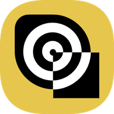

Binaris
AI Assistant
Build, code, design, and get instant answers — for free.
Chat in Haitian Creole, English, French, Spanish and more.
Open Binaris →
💬 Free AI Chat
🌍 Multilingual
💻 Code Assistant
🎨 Design Help
⚡ Instant Answers
🇭🇹 Kreyòl Ayisyen